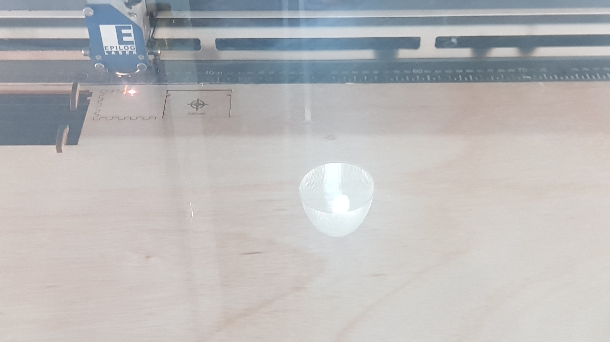
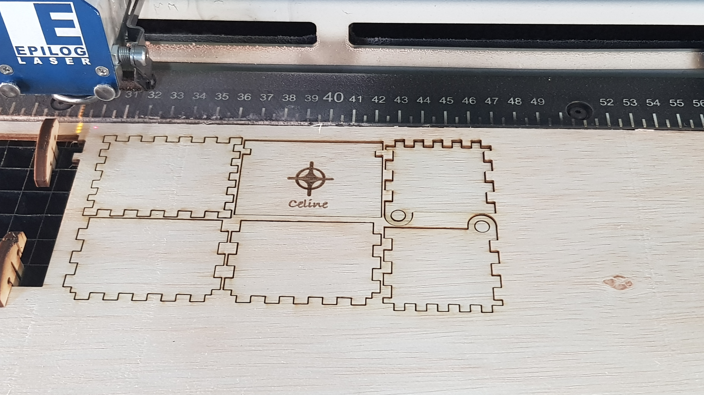
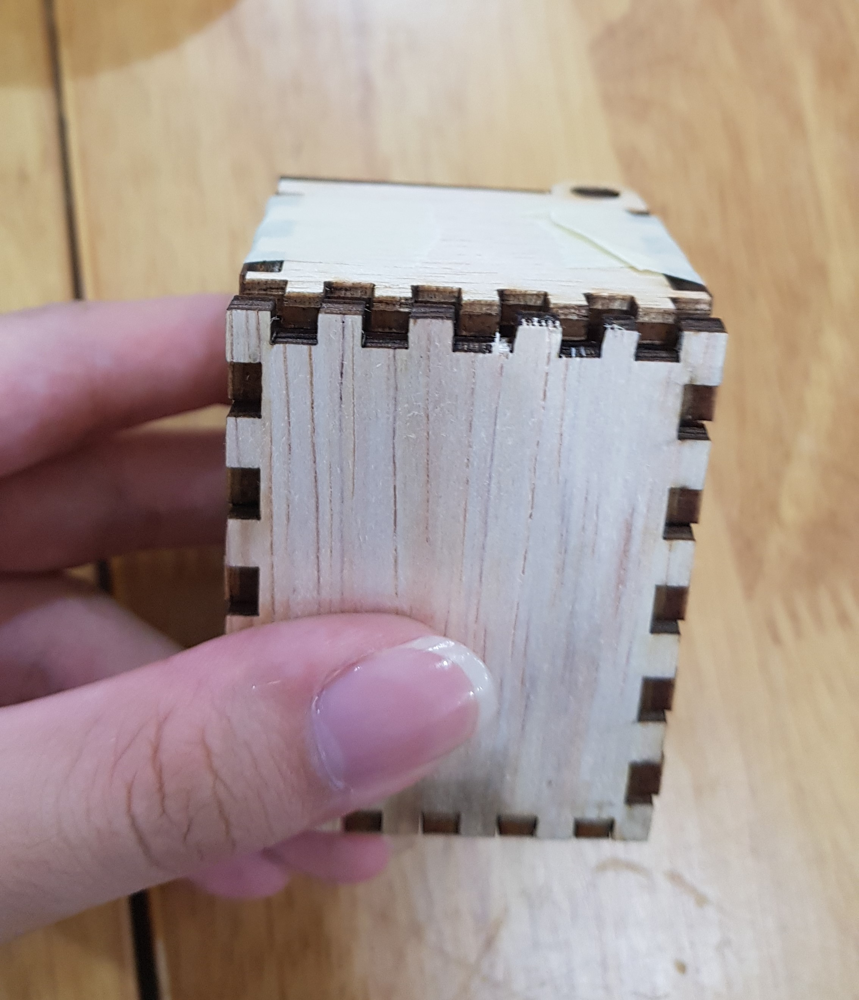
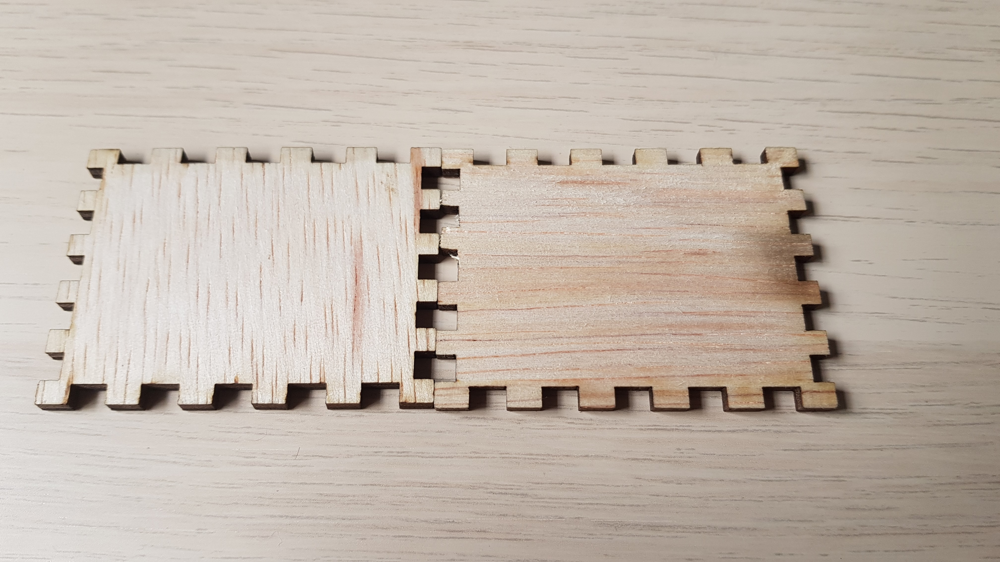
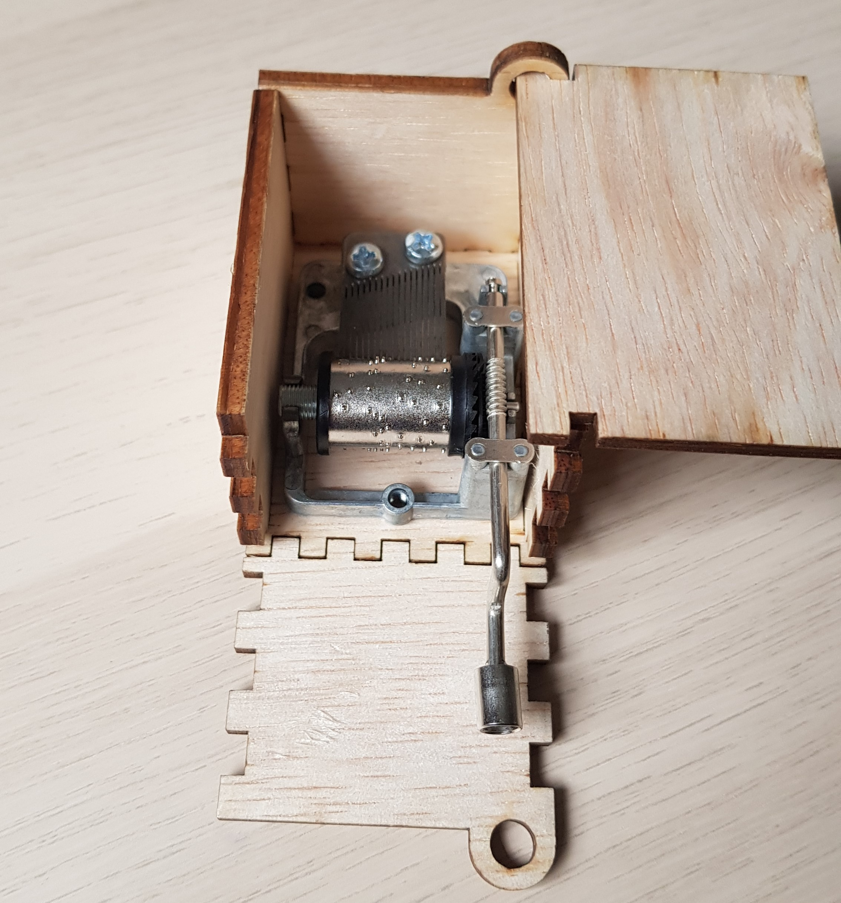
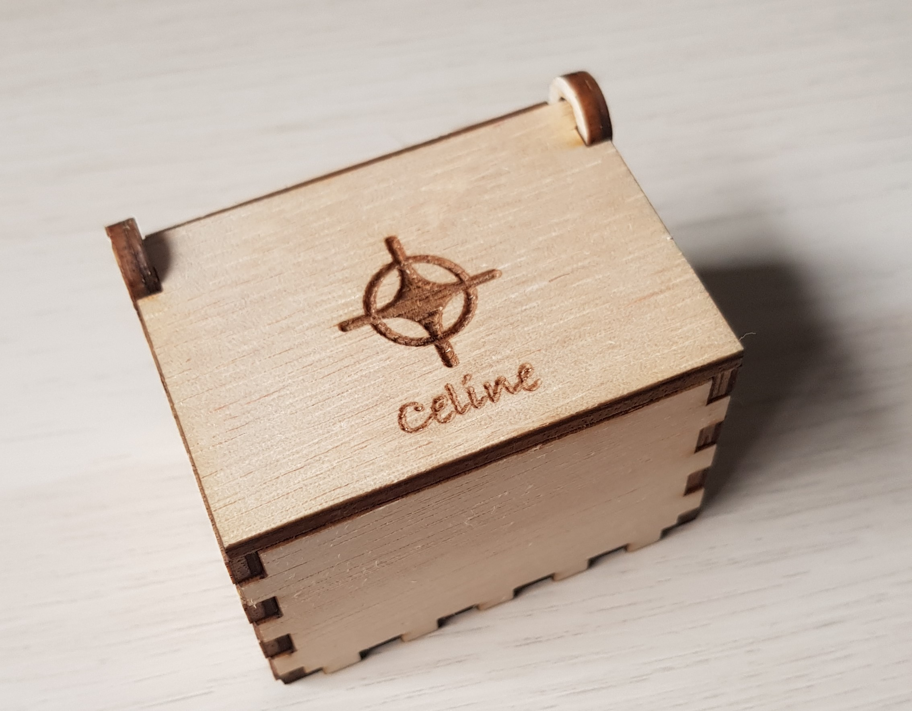
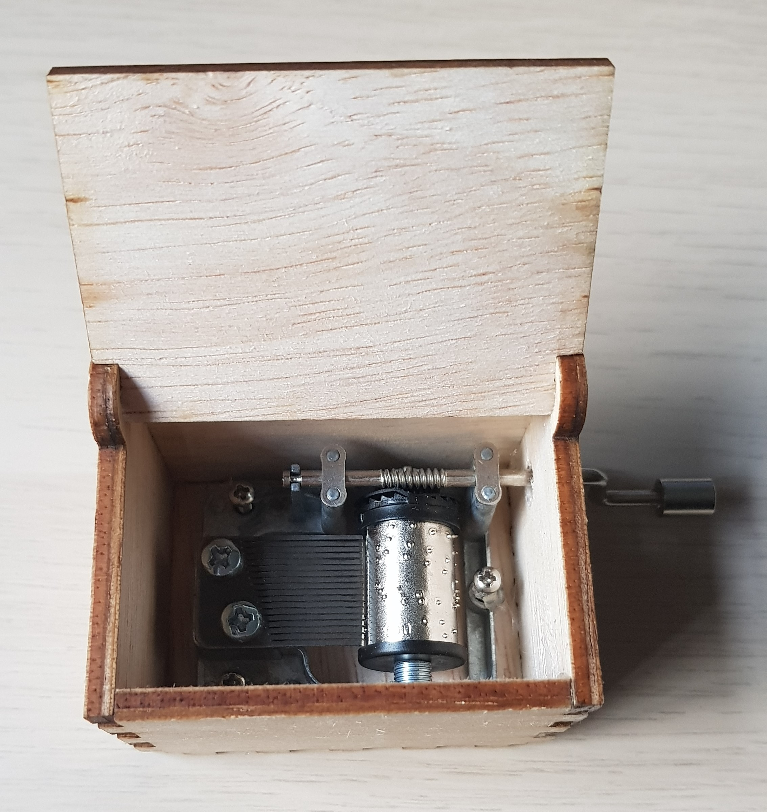
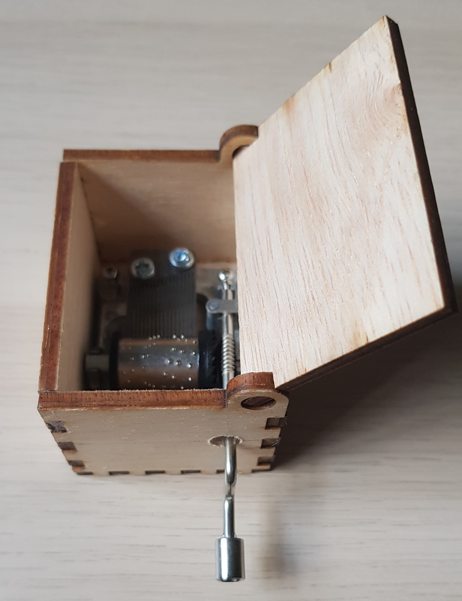

Laser cutting
As the laser cutting exercise, we were tasked to laser cut a box with a lid that could fit a music box device in it. For the box, I used
the parametric box I created previously for the controlled cutting assignment. My chosen dimensions were:
Length: 45 mm
Width: 60 mm
Height: 40 mm
Thickness: 3.3 mm
Preparation
To prepare the box for cutting, I created new sketches out of the base, sides, and lid of the box in Fusion 360 and exported them as .dxf files. Then,
I imported them into a new document in LibreCAD to arrange them for printing.
After arranging the patterns, I exported it, along with an image for engraving, on to a thumbdrive to transfer them onto the computer connected to the
laser cutter. Then, I opened the .dxf file on CorelDraw and placed my image and text on the lid of the box. The lines of the box were set to hairline and
the engraving was set to the necessary font. I then sent the file to the printing software to change the print settings.
Auto focus and air assist were set to on, and the engraving settings were left as is. For the cutting, the settings used
were:
- Speed: 15%
- Power: 75%
- Frequency: 50%
- Thickness: 3.5 mm
To test the settings, I did a test cut of a small 20 mm hexagon with some text engraving. The results of the test are below.
As the piece of wood was a little warped, I used some pegs to hold the wood down. I set the location of the start of the printing using the controller on the laser cutter and started cutting.
|  |  |
Assembly
When checking the pieces, I noticed that one of the sides would not fit on the base piece of the box. Looking at it carefully, I realised that the tabs on one of the sides of the base did not match the side piece. This was likely due to the wood being warped while cutting, which caused the problem. I had to recut a new base for my box in order to assemble it.

To assemble the box, I used some screws and a hot glue gun to attach the music box mechanism to the base of the box. Then , UHU glue was used to attach the sides of the box together. Before attaching the right side of the box, I measured the location of the music box's handle and drilled a hole big enough to fit the handle through.
Completed box
Box before glue and music box
Completed music box front and side view
|  |  |
After completing this practice, I took the laser cutting certification quiz available on blackboard. Below are my results.